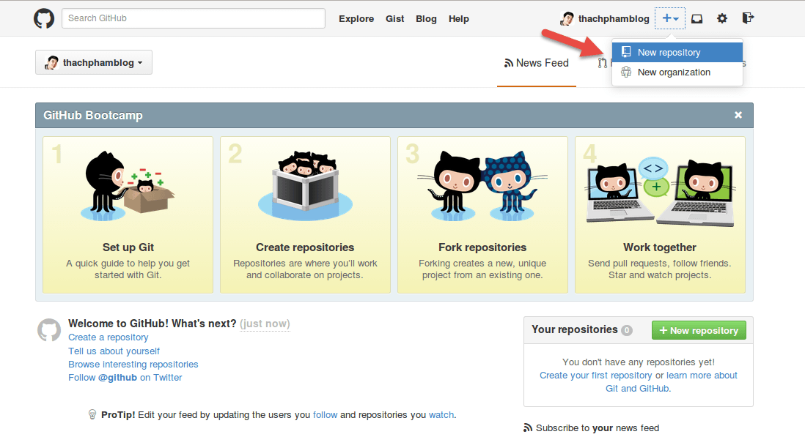

Cách tạo một repository
Repository (kho chứa) nghĩa là nơi mà bạn sẽ lưu trữ mã nguồn và một người khác có thể sao chép (clone) lại mã nguồn đó nhằm làm việc. Repository có hai loại là local repository (kho chứa trên máy cá nhân) và remote repository (kho chứa trên một máy chủ từ xa).
Trong bài này, mình sẽ hướng dẫn bạn cách tạo local repository và remote repository (sử dụng GitHub) và làm việc với nó.
Tạo local repository
Trước hết, để tạo một repository thì bạn cần truy cập vào thư
mục của mã nguồn với lệnh cd, sau đó sử dụng lệnh git
init để khởi tạo repository trong thư mục đó. Ở ví dụ này,
mình sẽ tạo tạo ra một thư mục mới để chứa code sau này và khởi tạo
repository cho nó, mình sẽ dùng lệnh git init <tên_folder>
để nó tự khởi tạo thư mục.
$ git init git_example Initialized empty Git repository in /home/thachpham/git_example/.git/
Ở đoạn trên, nó hiển thị dòng thông báo mình đã khởi tạo một kho git
trống tại đường dẫn như trên. Lưu ý rằng thư mục ẩn .git/ là
nơi nó sẽ chứa các thiết lập về git cũng như lưu lại toàn bộ thông tin
về kho chứa, bạn không cần đụng chạm gì vào thư mục .git/ này.
Nếu kho chứa của bạn đã có sẵn mã nguồn thì bạn cần phải đưa
các tập tin về trạng thái Tracked nhằm có thể làm việc được
với git. Để làm việc này, bạn sẽ cần sử dụng lệnh git add
tên_file, có thể sử dụng dấu * để gom toàn
bộ. Sau đó có thể sử dụng lệnh git status để xem danh
sách các tập tin đã được tracked.
$ git add readme.txt $ git status On branch master
Initial commit
Changes to be committed: (use "git rm --cached <file>..." to unstage)
new file: readme.txt
Và sau khi tập tin đã được đưa vào trạng thái tracked và nếu một tập
tin đã tracked thì nó phải được đưa vào lại Staging Area (giải thích ở
bài sau) cũng bằng lệnh git add thì bạn mới có thể tiến
hành ủy thác (commit) nhằm lưu lại bản chụp các thay
đổi. Lệnh commit sẽ có cấu trúc git commit -m "Lời nhắn",
lúc này tất cả các tập đang trong trạng thái tracked (file mới)
hoặc một tập tin đã được tracked nhưng có một sự thay đổi mới thì sẽ
được commit.
$ git commit -m "First commit" [master (root-commit) 799db56] First Commit 1 file changed, 0 insertions(+), 0 deletions(-) create mode 100644 readme.txt
Bây giờ thì bạn đã hoàn thành việc commit lần đầu tiên các tập tin mà bạn đã đưa vào kho, mình sẽ nói kỹ hơn về việc commit ở các bài sau. Tóm lại là tới đây bạn đã có một kho chứa mã nguồn Git trên máy của bạn.
Tạo repository trên GitHub và làm việc
Trước tiên bạn cần đăng nhập vào Github, sau đó ấn vào dấu + trên menu và chọn New repository.

Bạn sẽ cần đặt tên cho kho chứa của bạn. Bạn có thể chọn loại kho chứa là Public (ai cũng có thể clone) và Private (chỉ có những người được cấp quyền mới có thể clone).
Khi tạo xong nó sẽ dẫn bạn tới trang hướng dẫn làm việc với kho chứa
vừa tạo. Và kho chứa của bạn bây giờ sẽ có địa chỉ là https://github.com/$user-name/$repository,
ví dụ https://github.com/thachphamblog/hoc-git.
Việc của bạn bây giờ là hãy clone cái kho chứa này về máy của mình bằng
lệnh git clone địa_chỉ.
$ git clone https://github.com/thachphamblog/hoc-git Cloning into 'hoc-git'... warning: You appear to have cloned an empty repository. Checking connectivity... done
Bây giờ hãy truy cập vào thư mục working tree (thư mục vừa clone
repository về) và thử tạo ra một file tên là README.md, sau đó
dùng lệnh git add để đưa file này vào Staging Area.
$ cd hoc-git $ echo "# Huong dan Git co ban" > README.md $ git add README.md $ git commit -m "First commit on GitHub" [master (root-commit) 6e729a4] First commit on Github 1 file changed, 1 insertion(+) create mode 100644 README.md
Tuy nhiên sau khi commit xong, tập tin đã được commit sẽ vẫn không thể
xuất hiện trong kho chứa trên GitHub mà bạn phải làm thêm một việc nữa
đó là dùng lệnh git push để đẩy các tập tin đã được
commit lên GitHub. Lưu ý rằng bạn sẽ cần nhập tài khoản và mật
khẩu GitHub.
$ git push origin master Counting objects: 3, done. Writing objects: 100% (3/3), 244 bytes | 0 bytes/s, done. Total 3 (delta 0), reused 0 (delta 0) To https://github.com/thachphamblog/hoc-git * [new branch] master -> master
origin nghĩa là tên remote (xem ở bài sau) và master là
tên branch, hai cái này mình sẽ giải thích kỹ hơn ở bài riêng của nó.
Bây giờ bạn có thể kiểm tra kho chứa của bạn trên GitHub rồi đó.
Có thể bạn sẽ thấy mỗi khi push lên GitHub thì nó hiển thị ra thông báo quá dài dòng, bạn có thể cho ẩn các thông báo đi mà chỉ hiển thị dòng khai báo username và password trên Github thì có thể thiết lập với lệnh này.
git config --global push.default simple
Tuy nhiên nếu bạn không thích bị hỏi mật khẩu nữa thì có thể sử dụng SSH với GitHub, mình sẽ nói cái này sau.
Lời kết
Bây giờ bạn đã biết cách tạo một repository cho git rồi chứ? Thật đơn giản phải không nào, bây giờ để tiếp tục các bài sau dễ dàng hơn, hãy thực hành tạo một reposity trên máy tính và tập commit, hoặc bạn có thể sử dụng GitHub để tập đưa mã nguồn của mình vào kho chứa cho thuần thục nhé.
Init
echo "# lockex1987.github.io" >> README.md
git init
git add README.md
git commit -m "First commit"
git remote add origin https://github.com/lockex1987/cttd-bean.git
git push -u origin master
Những lần sau chỉ cần git push, không cần -u.